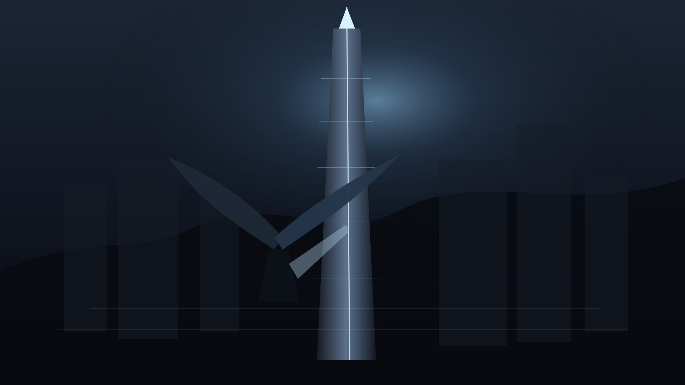

컨셉 아트

팀 프로젝트
Open World Soulslike Action RPG

레오나르의 날개는 기계 날개, 갈고리, 메모리 장비를 이용해 수직 도시와 필드를 탐험하는 오픈월드 소울라이크 액션 RPG 팀 프로젝트입니다.
Heat와 과열, 기계 날개, 갈고리, 무기·장비·보조 메모리 조합을 중심으로 전투와 탐험을 설계합니다. 베르나 도시, 승강탑, 기억 저장고 등 수직 구조 중심의 레벨디자인과 언리얼 블록아웃 검증을 포함합니다.
레오나르의 날개 UE 프로토타입 영상의 YouTube ID를 입력하세요.